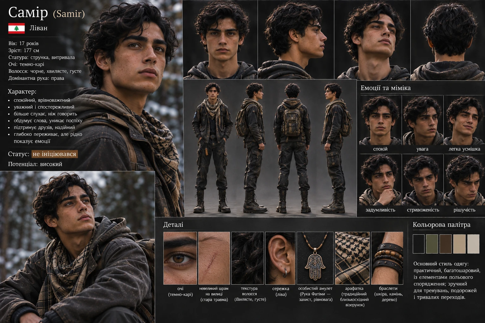

ОСНОВНА ІНФОРМАЦІЯ
Спостережливість і внутрішня зосередженість
Самір — один із семи найздібніших учнів Мольфара, які вирушають разом із ним та Алісією. Він родом із Лівану. На відміну від Ніколаса, Самір не прагне заповнювати тишу розмовами: уважно слухає, спостерігає за людьми й обставинами та не поспішає з висновками.
Походження: Ліван
Вік: 17 років
Зріст: 177 см
Статура: струнка, витривала
Очі: темно-карі
Волосся: чорне, густе, хвилясте
Домінантна рука: права
Статус: не ініціювався
Потенціал: високий
РОЛЬ І ХАРАКТЕР
Той, хто спершу слухає
Самір спокійний і врівноважений, уважний до співрозмовників та обережний у словах. Він не любить поспіху, підтримує друзів і рідко демонструє сильні емоції. Його стриманість не означає байдужості: він глибоко переживає події, але не завжди показує це оточенню.
У зовнішньому образі важливі практичний одяг для тривалих переходів, арафатка з традиційним близькосхідним візерунком, браслети та особистий амулет — Рука Фатіми, символ захисту й рівноваги. На обличчі є невеликий старий шрам, у лівому вусі — сережка.
ПЕРШИЙ ПРОЯВ ЗДІБНОСТЕЙ
Мислезв'язок
Під час зустрічі учнів у Черкасах Самір несподівано для себе вловлює думку іншої людини — згадку про море. Це відбувається під час першого спільного прояву мислезв'язку серед учнів. Самір не намагається привернути до себе увагу й реагує стримано, але цей епізод підтверджує, що він також здатний сприймати думки інших.
Подальше навчання має допомогти йому розібратися з новою здатністю, навчитися свідомо передавати думки та контролювати сприйняття чужих повідомлень.
ДОВІДКОВІ ДАНІ
Підтверджені риси персонажа
Що підтверджено рукописом
- Самір — учень Мольфара з Лівану.
- Входить до групи семи найздібніших учнів, які подорожують разом із Мольфаром та Алісією.
- Спокійний, небагатослівний, більше слухає, ніж говорить.
- Під час спільного прояву мислезв'язку чує думку про море.
- Не любить поспіху.
Що визначено наданим візуальним патерном
Вік 17 років, зріст 177 см, струнка витривала статура, темно-карі очі, густе хвилясте чорне волосся, права домінантна рука. Візуальні деталі: невеликий старий шрам на обличчі, сережка в лівому вусі, арафатка, браслети та амулет у формі Руки Фатіми.